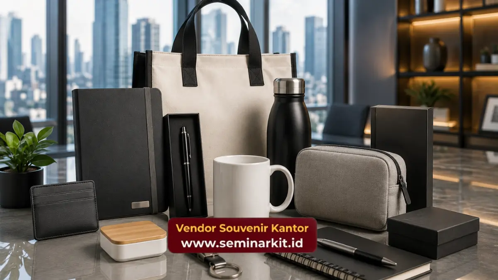

Souvenir kantor budget 50 ribu adalah kategori merchandise korporat dengan kisaran harga terjangkau namun tetap tampil premium, mencakup mug custom, notebook, tumbler, hingga power bank mini.
Kisaran harga ini dipilih banyak HRD dan tim procurement karena mampu menghadirkan kesan profesional tanpa membebani anggaran acara. vendorsouvenirkantor.web.id menyediakan pilihan souvenir kantor budget 50 ribu yang dapat dicustom logo perusahaan untuk kebutuhan seminar, gathering, maupun apresiasi karyawan.
- Souvenir kantor budget 50 ribu mencakup produk fungsional seperti mug, notebook, tumbler, dan aksesori kerja.
- Harga ini umumnya sudah termasuk opsi custom logo pada produk berkuantitas menengah hingga besar.
- Cocok untuk kebutuhan seminar, gathering karyawan, kunjungan klien, dan hampers akhir tahun.
- Kualitas bahan tetap dapat dijaga meski berada pada rentang harga terjangkau, asalkan vendor dipilih dengan tepat.
- Pemesanan dapat dilakukan secara custom melalui vendorsouvenirkantor.web.id dengan proses yang jelas.
Apa yang Dimaksud dengan Souvenir Kantor Budget 50 Ribu?
Souvenir kantor budget 50 ribu adalah istilah yang merujuk pada kategori merchandise perusahaan dengan harga satuan berkisar di angka lima puluh ribu rupiah, baik sebelum maupun sesudah proses custom logo.
Kategori ini menjadi salah satu yang paling sering dicari karena berada di titik tengah antara souvenir promosi murah dan souvenir eksekutif premium.
Pada rentang harga ini, perusahaan umumnya masih bisa mendapatkan produk dengan bahan yang layak pakai jangka panjang, bukan sekadar barang promosi sekali pakai.
Karakteristik ini penting bagi perusahaan yang ingin menjaga citra profesional di mata karyawan, klien, maupun mitra bisnis, sekaligus tetap efisien dalam pengeluaran anggaran acara.
Secara umum, harga souvenir kantor sangat dipengaruhi oleh jenis bahan, teknik custom logo yang digunakan, dan jumlah pemesanan. Semakin besar kuantitas pesanan, biasanya harga satuan dapat semakin efisien, sehingga budget 50 ribu per unit menjadi lebih realistis dicapai untuk pemesanan dalam jumlah menengah hingga besar.
Mengapa Banyak Perusahaan Memilih Souvenir Kantor Budget 50 Ribu?
Budget 50 ribu dipilih karena menawarkan keseimbangan antara efisiensi anggaran dan kualitas tampilan produk yang tetap terlihat profesional saat diberikan kepada karyawan maupun klien.
Beberapa alasan utama perusahaan cenderung mengalokasikan anggaran souvenir pada kisaran ini antara lain:
- Anggaran acara internal seperti gathering atau seminar biasanya memiliki batasan per peserta, dan angka 50 ribu dianggap masuk akal untuk item non-utama.
- Produk pada kisaran harga ini umumnya sudah dapat dicustom logo, sehingga tetap berfungsi sebagai media branding perusahaan.
- Souvenir dengan harga terlalu murah cenderung terkesan kurang dihargai penerimanya, sementara budget 50 ribu masih memberi kesan layak dan sopan.
- Kisaran harga ini fleksibel untuk berbagai jenis acara, mulai dari internal meeting, seminar eksternal, hingga hampers untuk klien.
Apa Saja Jenis Souvenir Kantor dengan Budget 50 Ribu?
Jenis souvenir kantor budget 50 ribu yang paling umum dipesan meliputi mug custom, notebook custom, tumbler sederhana, gantungan kunci premium, dan power bank mini kapasitas standar.
Setiap kategori produk memiliki karakteristik dan kegunaan yang berbeda, sehingga pemilihannya sebaiknya disesuaikan dengan tema acara dan profil penerima souvenir.
Mug dan Tumbler Custom Logo
Mug keramik dan tumbler menjadi salah satu pilihan paling populer karena fungsinya yang praktis digunakan sehari-hari di lingkungan kantor.
Produk ini juga menyediakan area cetak yang cukup luas untuk menampilkan logo perusahaan secara jelas, sehingga efektif sebagai media branding pasif setiap kali digunakan oleh karyawan atau klien.
Notebook dan Alat Tulis Custom
Notebook custom dengan cover logo perusahaan tetap menjadi favorit untuk acara seminar maupun training internal.
Kombinasi notebook dengan pulpen custom juga sering dipilih karena memberikan kesan satu set yang lebih lengkap tanpa harus menambah anggaran secara signifikan.
Aksesori Elektronik Ringan
Power bank mini dan kabel data custom logo menjadi pilihan yang semakin diminati karena nilai fungsionalnya yang tinggi di era kerja digital.
Produk elektronik ringan ini umumnya masih dapat masuk dalam rentang budget 50 ribu apabila spesifikasinya disesuaikan dengan standar merchandise korporat, bukan spesifikasi produk elektronik premium.
Bagaimana Cara Memesan Souvenir Kantor Budget 50 Ribu dengan Logo Perusahaan?
Pemesanan souvenir kantor budget 50 ribu dengan logo perusahaan umumnya dilakukan dengan mengirimkan desain logo, memilih jenis produk, menentukan jumlah pesanan, lalu melakukan konfirmasi produksi kepada vendor.
Proses ini biasanya berjalan lebih cepat apabila perusahaan sudah memiliki gambaran jelas mengenai jenis acara, jumlah peserta, dan tenggat waktu pengiriman souvenir.
Kejelasan kebutuhan di awal akan membantu proses produksi berjalan lebih efisien dan sesuai jadwal acara.
Bagi perusahaan yang ingin mendapatkan penawaran souvenir kantor budget 50 ribu dengan custom logo, tim vendorsouvenirkantor.web.id siap membantu menyesuaikan pilihan produk dengan kebutuhan dan tenggat acara Anda.
Anda dapat menghubungi tim kami melalui vendorsouvenirkantor.web.id untuk konsultasi jenis produk dan estimasi harga sesuai jumlah pesanan.
Apa Saja Kesalahan Umum saat Memilih Souvenir Kantor Budget Terbatas?
Kesalahan paling umum saat memilih souvenir kantor dengan budget terbatas adalah memilih produk berdasarkan harga termurah tanpa mempertimbangkan kualitas bahan dan daya tahan cetak logo.
- Terlalu fokus pada harga terendah sehingga produk terasa kurang layak saat diterima.
- Tidak memperhitungkan waktu produksi, sehingga souvenir tidak siap tepat sebelum acara berlangsung.
- Memilih desain logo yang terlalu detail untuk media cetak berukuran kecil, sehingga hasil akhir kurang jelas.
- Mengabaikan konsistensi tema souvenir dengan identitas visual perusahaan.

Berapa Kisaran Waktu Produksi Souvenir Kantor Budget 50 Ribu dengan Custom Logo?
Waktu produksi souvenir kantor budget 50 ribu dengan custom logo umumnya dipengaruhi oleh jenis produk, teknik cetak logo, dan jumlah pesanan, sehingga durasinya dapat bervariasi antara satu produk dengan produk lainnya.
Produk dengan proses cetak sederhana seperti sablon pada tumbler atau notebook biasanya dapat diproduksi dalam waktu yang relatif singkat dibandingkan produk dengan teknik custom yang lebih rumit, seperti ukir laser pada bahan metal atau bordir pada bahan kain.
Jumlah pesanan dalam skala besar juga turut memengaruhi alokasi waktu produksi, karena proses pengerjaan perlu disesuaikan dengan kapasitas produksi harian vendor.
Bagi perusahaan yang memiliki tenggat acara mendesak, sebaiknya kebutuhan souvenir dikomunikasikan sejak awal kepada vendor agar durasi produksi dapat disesuaikan dengan tanggal pelaksanaan acara.
Perencanaan yang matang di awal akan mengurangi risiko keterlambatan pengiriman souvenir menjelang hari acara berlangsung.
Bagaimana Cara Menentukan Jumlah Pemesanan Souvenir Kantor Budget 50 Ribu yang Tepat?
Jumlah pemesanan souvenir kantor budget 50 ribu sebaiknya ditentukan berdasarkan jumlah peserta acara ditambah cadangan secukupnya, guna mengantisipasi kebutuhan tambahan yang mungkin muncul menjelang atau saat acara berlangsung.
Menentukan jumlah pesanan secara pas tanpa cadangan berpotensi menimbulkan kekurangan souvenir apabila terdapat peserta tambahan yang tidak terdaftar sebelumnya.
Sebaliknya, memesan dalam jumlah yang jauh melebihi kebutuhan juga dapat mengakibatkan pemborosan anggaran yang seharusnya dapat dialokasikan untuk kebutuhan acara lainnya.
Sebagai langkah yang lebih efisien, tim procurement maupun HRD dapat melakukan koordinasi dengan panitia acara terkait estimasi jumlah peserta final sebelum mengonfirmasi jumlah pemesanan souvenir kepada vendor.
Kesimpulan
Souvenir kantor budget 50 ribu merupakan pilihan yang seimbang antara efisiensi anggaran dan kualitas tampilan produk untuk kebutuhan branding perusahaan.
Dengan pemilihan jenis produk yang tepat, seperti mug, notebook, atau aksesori elektronik ringan, perusahaan tetap dapat menghadirkan kesan profesional kepada karyawan maupun klien.
Bagi Anda yang sedang mempersiapkan seminar, gathering, atau apresiasi karyawan dalam waktu dekat, tim vendorsouvenirkantor.web.id siap membantu mewujudkan souvenir kantor budget 50 ribu yang sesuai kebutuhan dan tenggat waktu Anda.
Kunjungi vendorsouvenirkantor.web.id sekarang untuk konsultasi dan penawaran harga terbaru.

Banner promosi: klik gambar untuk langsung terhubung ke WhatsApp tim sales.